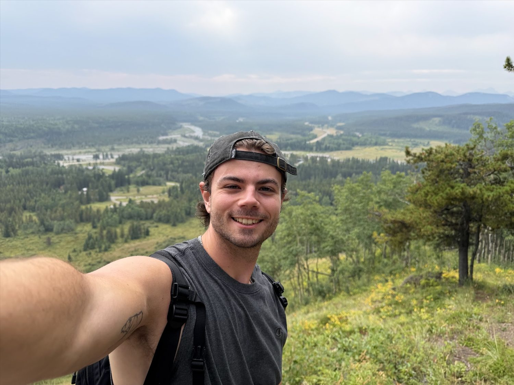
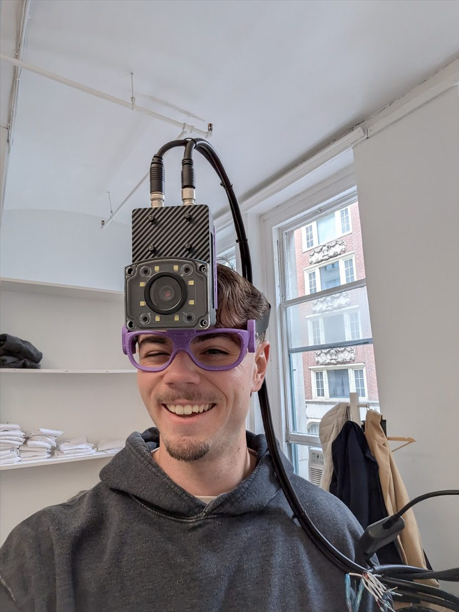
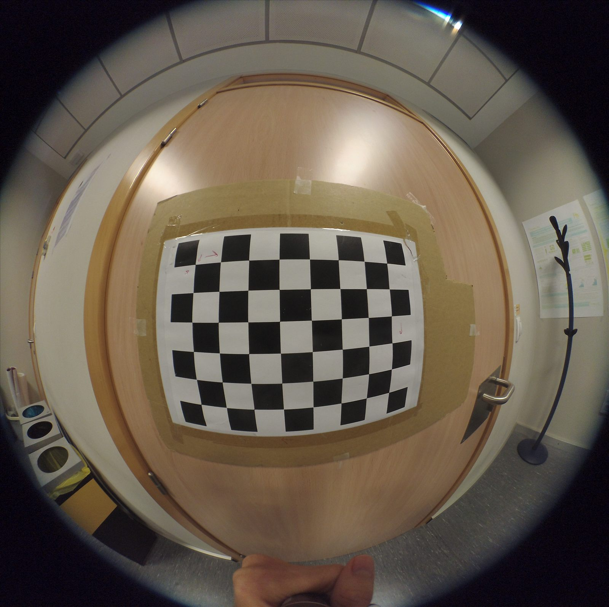
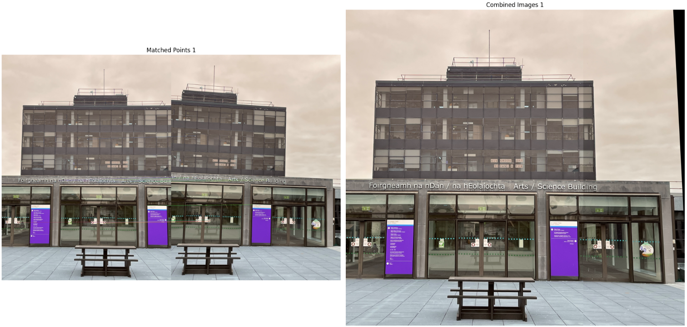

Drag the divider to compare the raw capture and processed image.
Image Signal Processor
Start with an 8-bit Bayer frame, then reconstruct color, correct the response, denoise, sharpen, and finish the contrast.
Computer Vision, Field Engineer in the Bay Area
I work on computer vision, industrial AI, and embedded systems. I like being close to the problem, whether that means testing hardware, talking with users, or getting software working in the field.
I’m especially interested in forward-deployed and field engineering roles that combine technical work with real customer problems.
Currently interested in new roles. Reach out by LinkedIn or email.


Selected work
A mix of browser demos, working applications, and hands-on computer vision projects.
Drag the divider to compare the raw capture and processed image.
Start with an 8-bit Bayer frame, then reconstruct color, correct the response, denoise, sharpen, and finish the contrast.

Live classification, category counts, and camera output in Streamlit.
A real-time waste identification app that connects a camera feed, Roboflow Workflows, object tracking, and a Streamlit dashboard.

Real-time face landmarks, eye openness, and blink-rate tracking.
I built this to measure what long hours at a screen were doing to my eyes. It combines YOLOv8, MediaPipe landmarks, and the eye aspect ratio at roughly 30 FPS.

One checkerboard frame used to estimate the lens parameters.
A practical OpenCV workflow for removing fisheye distortion, measuring reprojection error, and excluding weak calibration frames.

Feature matching and perspective alignment across overlapping frames.
A classical vision pipeline using ORB features, brute-force matching, homography estimation, and warping to combine a scene.
About
At Roboflow, I worked with manufacturers to discover and scope computer vision problems, understand the constraints on the floor, and turn them into deployable systems. That work covered industrial cameras, NVIDIA Jetsons, networking, and the customer environments around them.
Earlier, I built imaging tools at Boston Scientific and worked close to embedded hardware at Analog Devices. I also tested real-time object segmentation for autonomous driving across a Raspberry Pi and remote GPU, which taught me how quickly model choices meet hardware and network limits.
I earned a Master’s in Electronic and Computer Engineering from the University of Galway. I do my best work when I can clarify the problem, build the system, and stay involved until it works where it matters.
Three areas where curiosity and practical experience overlap.
Applying vision systems to inspection, automation, and manufacturing problems.
Working directly with users and adapting edge systems to real environments.
Building within practical limits such as compute, latency, and hardware.
Get in touch
Email is the easiest way to reach me.
suderman.kaden@gmail.com ↗